EBlinqx Hypotheekadvies
Open in een nieuw tabblad · wachtwoord: IkWilLeren
Alle stappen
CRM- Dossier aanmaken - copy
Stap 1
Welkom bij eBlinqx Hypotheekadvies
In deze trainingsomgeving zal de werkwijze van de propositie
eBlinqx Advies & Bemiddeling Start
worden doorlopen.Na het voltooien van deze training ben je klaar om eBlinqx te gebruiken.
Stap 2
Het Dossier
In de volgende stappen nemen we de basisinformatie door van het klantdossier
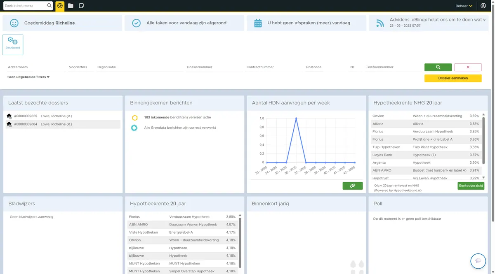
Stap 3
Klant opzoeken
Zoek naar je klant met behulp van de zoekvelden hierboven
Particuliere relaties: Gebruik het veld "Achternaam"
Zakelijke relatie: Gebruik het veld "Organisatie"
Met een %-teken is het mogelijk om op naamdelen te zoeken.
Stap 4
Uitgebreide filters
Druk op "Toon uitgebreide filters"
Stap 5
Uitgebreide filters
Nu kan er op meerdere criteria worden gezocht
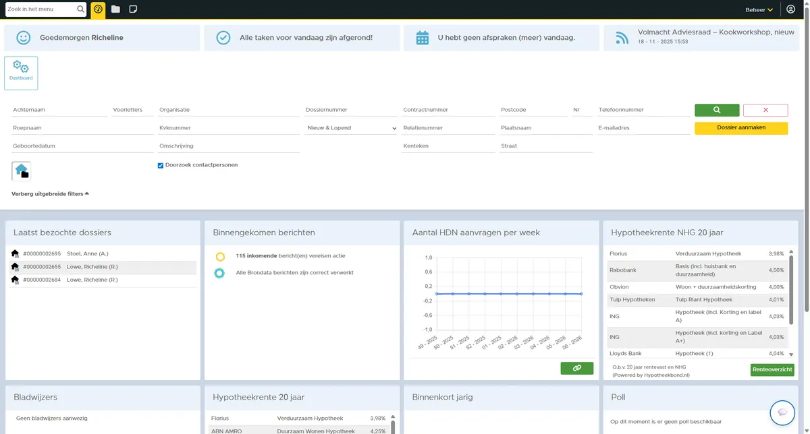
Stap 6
Dossier aanmaken
Indien de klant nog niet in het systeem staat, kan er een nieuw dossier aangemaakt worden
Klik op "Dossier aanmaken"
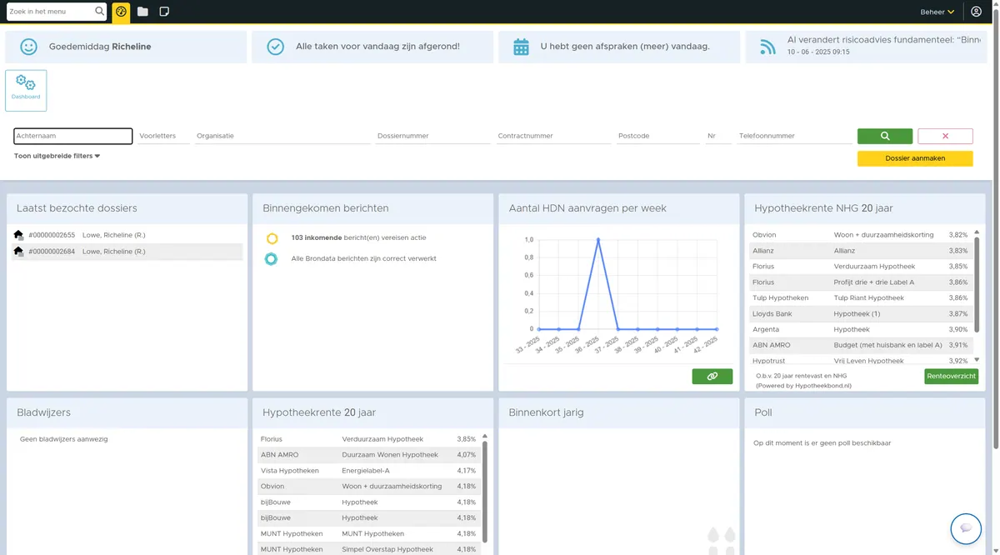
Stap 7
Gegevens invullen
Laat de status op "prospect" staan
Dit wordt automatisch aangepast wanneer de opdracht tot dienstverlening ontvangen is
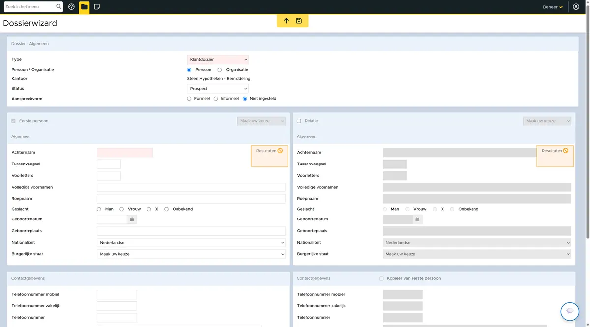
Stap 8
Aanspreekvorm
Wanneer deze op "niet ingesteld blijft staan, wordt informeel aangehouden
Stap 9
Alle roze velden zijn verplicht
Stap 10
Persoonsgegevens
Vul tenminste de onderstaande gegevens in:
Achternaam
Tussenvoegsel
Voorletters
Roepnaam
Geslacht
Geboortedatum
Burgerlijke staat
Stap 11
Contactgegevens
Vul minimaal de onderstaande gegevens in:
Mobiel telefoonnummer
E-mailadres
Deze gegevens zijn benodigd om het klantportaal (UwKluis / Online klantportaal) te activeren.
Achteraf aanvullen blijft altijd een mogelijkheid.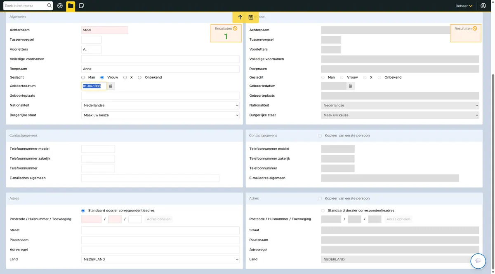
Stap 12
Adresgegevens
Haal het adres op door de postcode en huisnummer op te voeren.
Druk op "Adres ophalen"
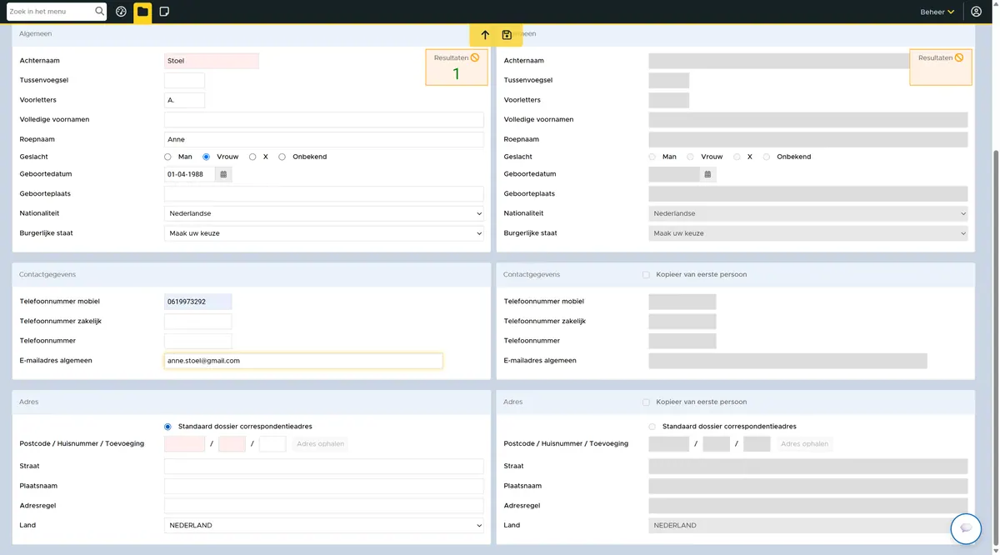
Stap 13
Partner toevoegen
Klik op het selectievakje relatie om de velden invulbaar te maken
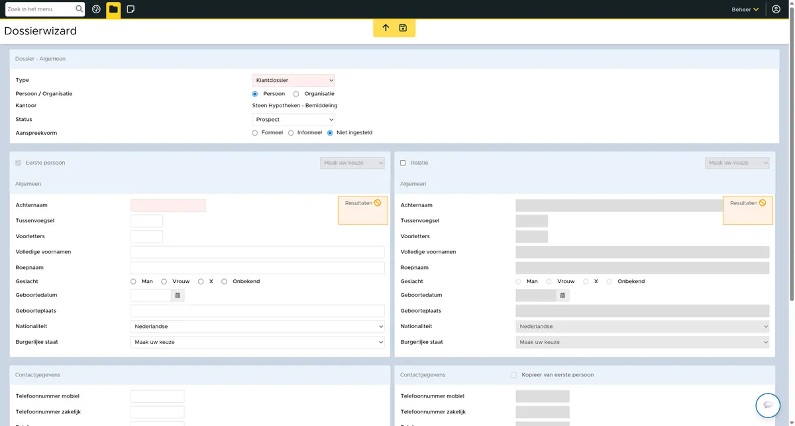
Stap 14
Kopieer de contactgegevens
De gegevens van de eerste persoon kunnen gekopieerd worden naar de tweede persoon
Selecteer "Kopieer van eerste persoon"
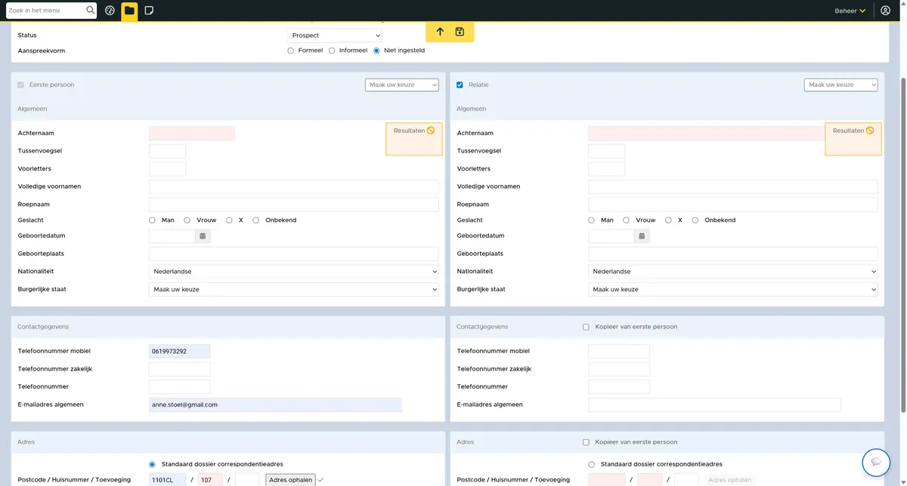
Stap 15
Kopieer de adresgegevens
Dit geldt ook voor de adresgegevens
Selecteer "Kopieer van eerste persoon"
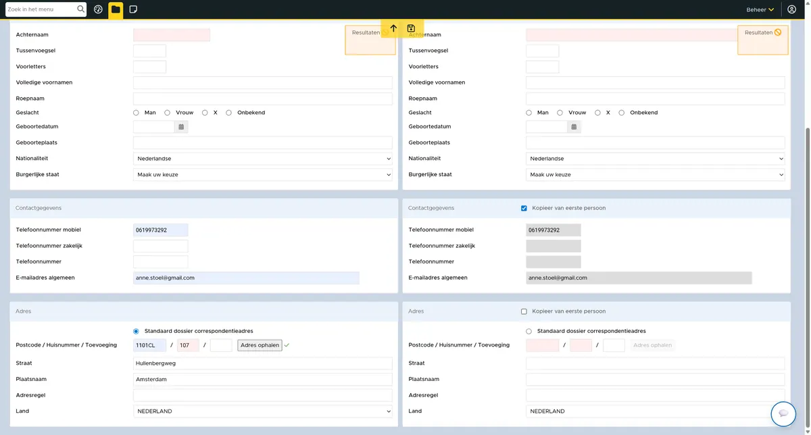
Stap 16
Opslaan
Klik op "opslaan"
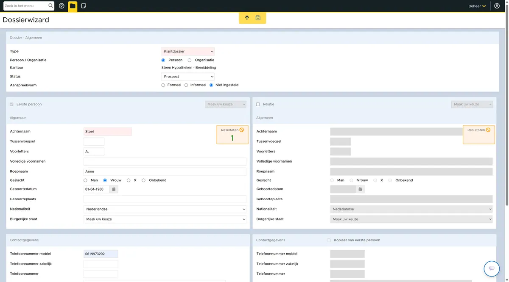
Stap 17
Het dossier is aangemaakt
Hier kan je snel de basisgegevens van de klant zien
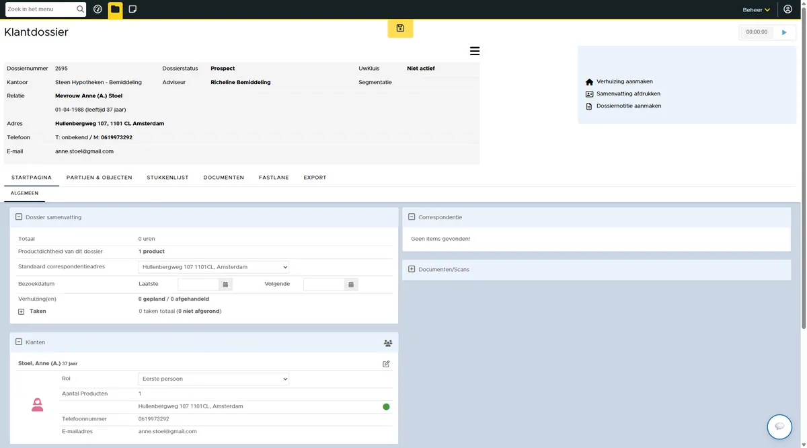
Stap 18
Dossier overzicht
Startpagina: Hier vind je een overzicht van alle informatie in het dossier
Partijen en objecten: Hier vind je alle betrokkenen partijen, zoals geldverstrekkers, notaris, makelaars etc. met hun contactgegevens
Stukkenlijst: Hier vind je alle stukken die zijn opgevraagd door jou en door de geldverstrekker
Documenten: Hier zie je alle documenten die zijn ontvangen van de klant of door jou zijn toegevoegd aan het dossier
Fastlane: Hier ga je naar de adviesprogramma eBlinqx Hypotheekadvies
Export: Hier kan je informatie vinden over klantportaal (UwKluis / Online klantportaal) en bronddata
Stap 19
Het dossier
Dit was de basisinformastie over het dossier
CRM- Dienst aanmaken - copy
Stap 20
Dienst aanmaken
Als financieel dienstverlener kan een klant zich melden met verschillende hulpvragen, zoals aankoop, verbouwing etc.
Door een dienst aan te maken is het mogelijk:
Om in één opslag te zien wat voor adviestraject er aangeboden wordt
Het klantportaal (UwKluis / Online klantportaal) aan te maken
Documenten op te vragen bij de klant
Een opdracht tot dienstverlening te maken
De volgende stappen laten de werkwijze zien
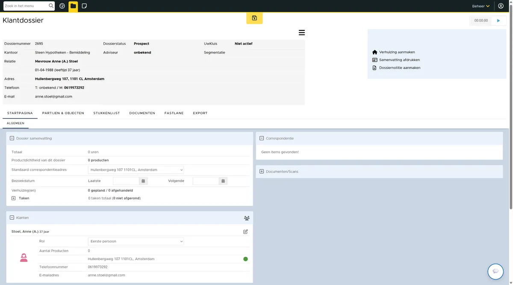
Stap 21
Nieuwe dienst aanmaken
Klik op "Nieuw product"
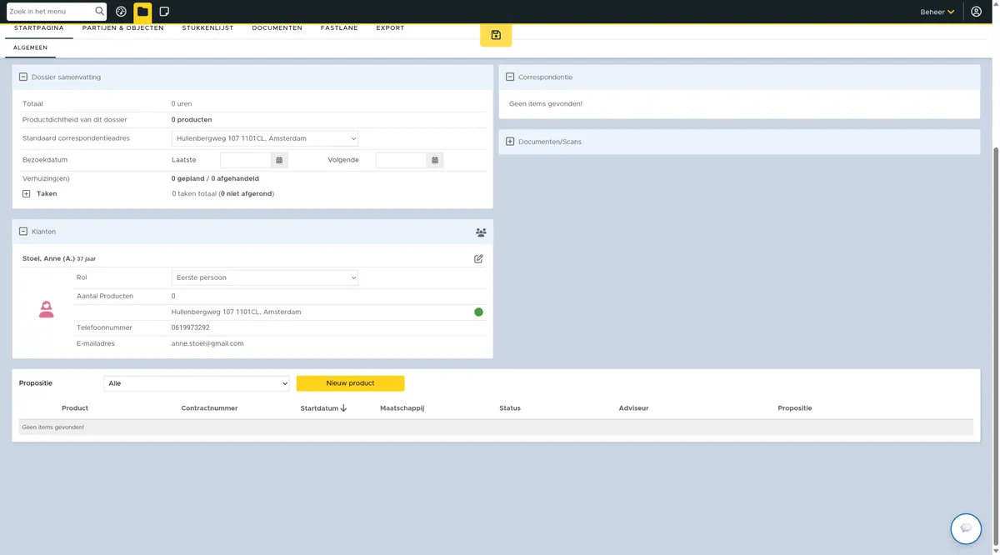
Stap 22
Nieuwe dienst aanmaken
Klik op "Dienst"
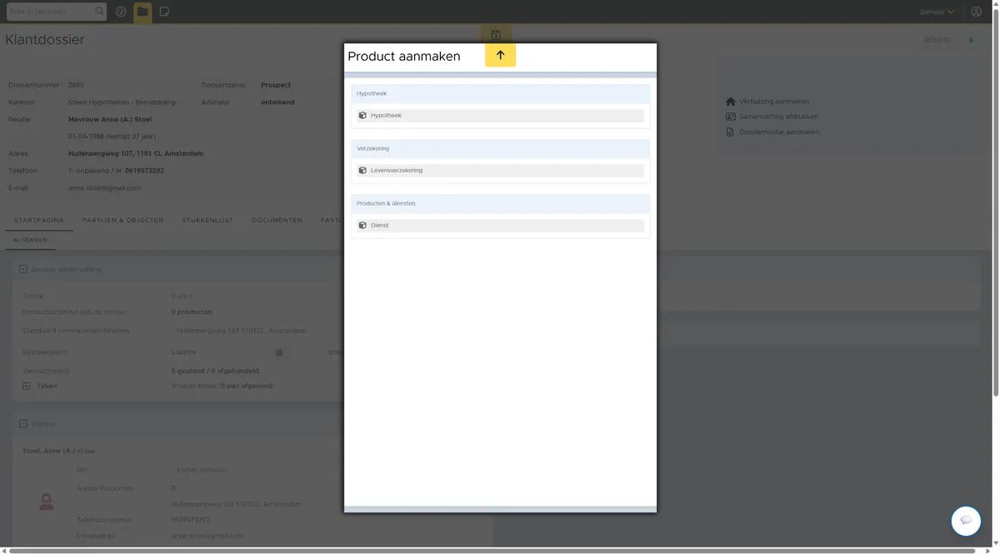
Stap 23
Dienst invullen
Vul aan de linkerkant van het scherm algemene informatie in. Alle roze velden verplicht
Omschrijving
Deze kan je leeglaten en wordt automatisch gevuld op basis van het gekozen dienstdeel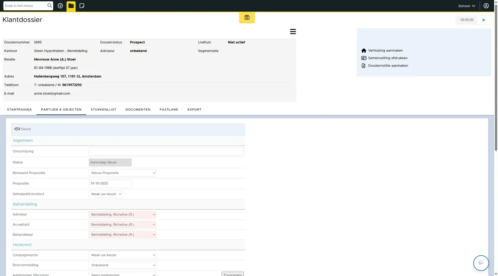
Stap 24
Behandeling
Geef hier aan wie welke rol heeft.
Adviseur De adviseur
Acceptant Dient hetzelfde te zijn als behandelaar
Behandelaar Degene die de voortgangsbewaking doet
Deze rollen kunnen uiteraard ook door één persoon vervult worden
Selecteer de adviseur
Selecteer de acceptant en behandelaar
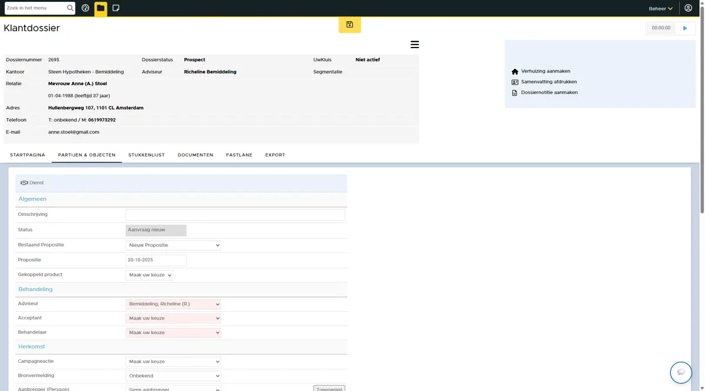
Stap 25
Contactgegevens
Hier kan je aangeven wie de eerste aanvrager is
Selecteer de eerste aanvrager
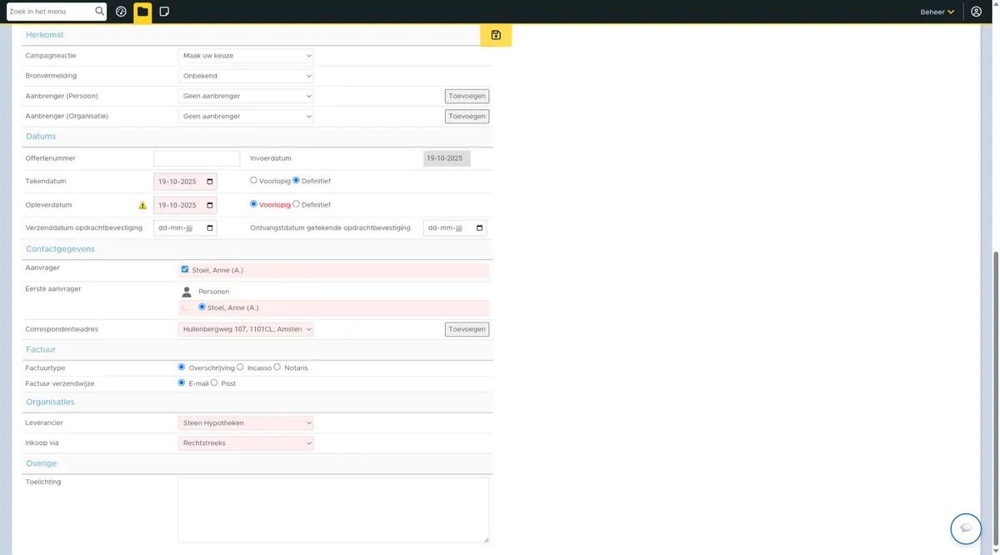
Stap 26
Opslaan
Klik op "opslaan"
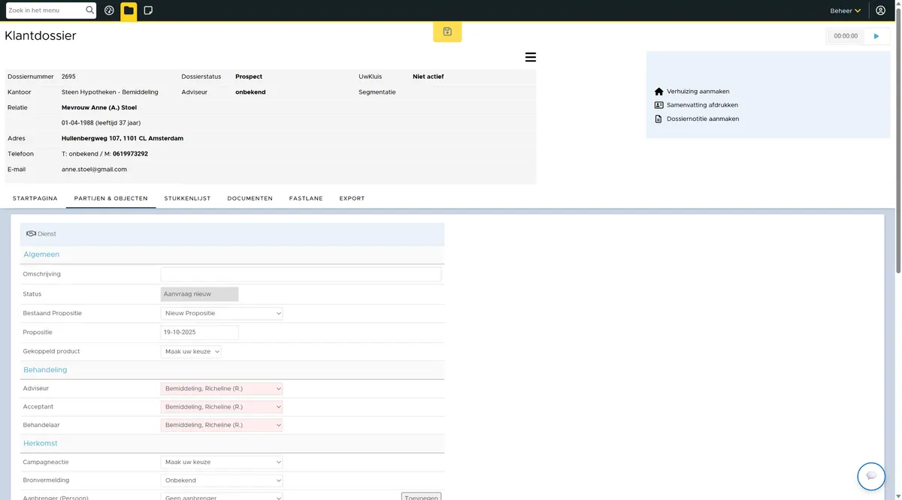
Stap 27
Rechterdeel van de dienst
Voeg een dienstdeel toe
Klik op het "plus-teken"
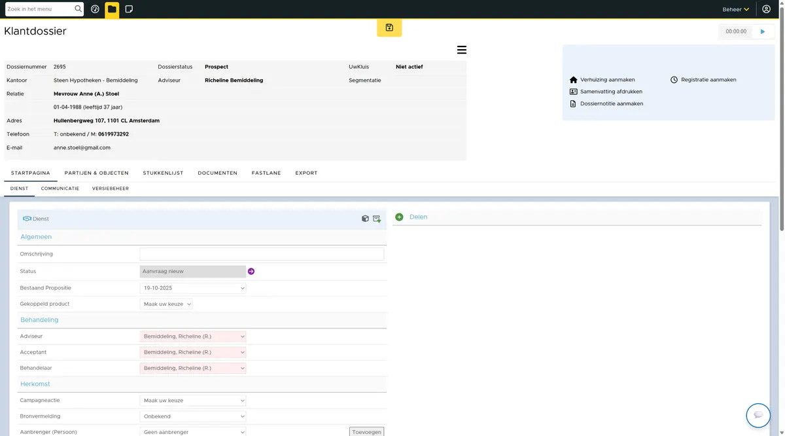
Stap 28
Dienst invullen
Hier kan je aangeven wat voor dienst je zal leveren
Selecteer een keuze uit de lijst
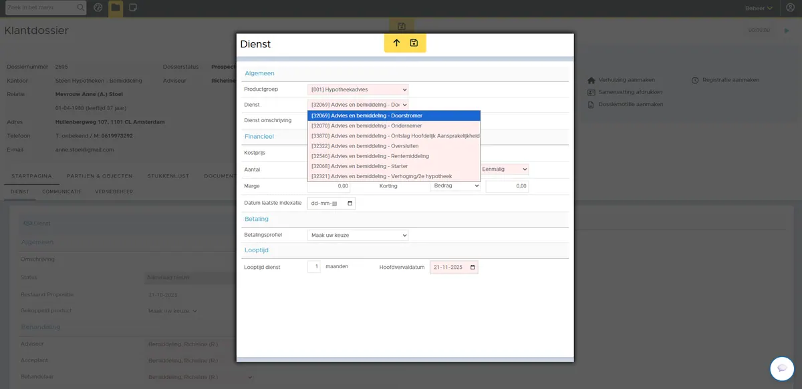
Stap 29
Prijsafspraak
Vul het bijbehorende bedrag in
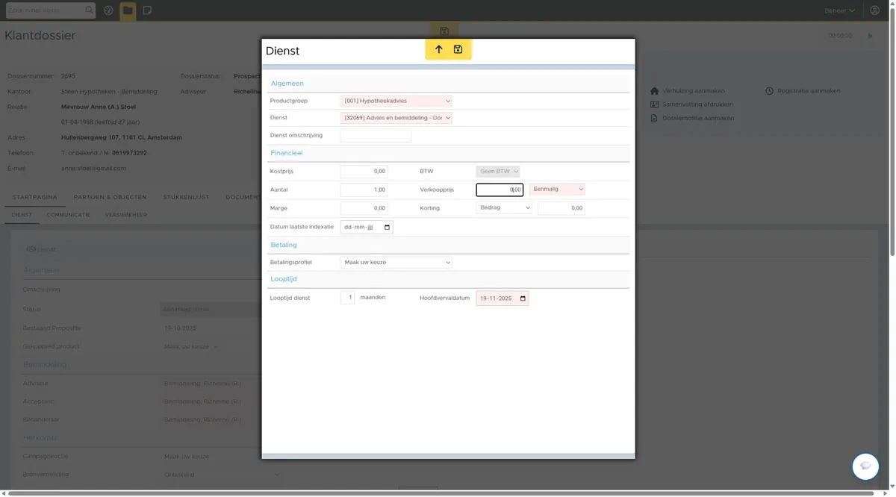
Stap 30
Opslaan
Klik op "opslaan"
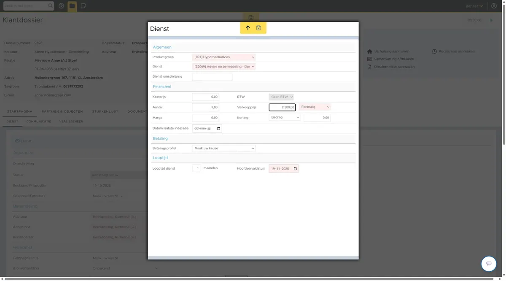
Stap 31
De dienst is aangemaakt
De omschrijving is automatisch ingevuld
Stap 32
Dienst
Op de startpagina is in één opslag te zien wat voor soort adviestraject er loopt
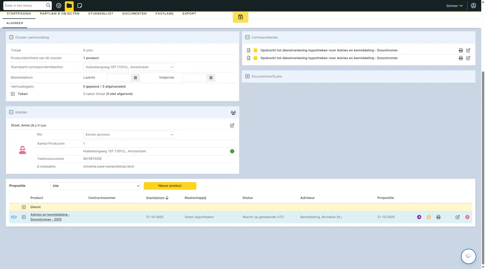
CRM-Uwkluis - copy
Stap 33
Workflows
In eBlinqx zijn diverse workflows beschikbaar die de gebruiker door het proces begeleiden.
Dit biedt comfort en vermindert de kans op fouten.
Basisregel: Klik alleen aan wat van toepassing is of wat uitgevoerd dient worden
Klik op de workflowpijl bij de dienst
Stap 34
Dienst
Op de startpagina is de dienst te vinden
Klik op de dienst
Stap 35
Workflow
Vanuit de dienst is het ook mogelijk om naar de workflows te gaan
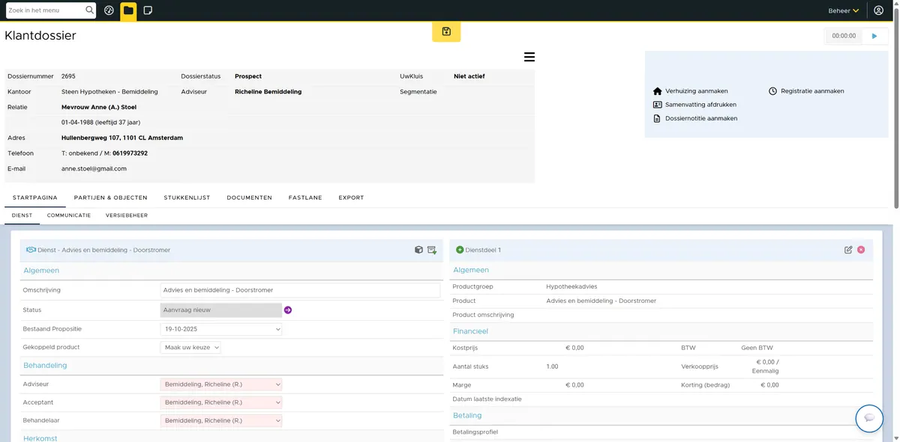
Stap 36
Workflow opties
De volgende opties zijn beschikbaar
UwKluis / Online klantportaal aanmaken (Klantportaal)
Stukkenlijst aanmaken
Opdracht tot dienstverlening aanmaken
Dit is de optimale volgorde voor het oppakken van de workflows
De stappen gaan als volgt
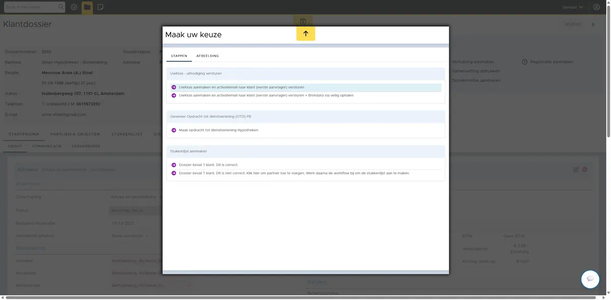
Stap 37
UwKluis / Online klantportaal aanmaken
Onder de workflow heb je twéé mogelijkheden
UwKluis / Online klantportaal aanmaken
UwKluis / Online klantportaal aanmaken + Brondata
Bij beide opties wordt er een activatiemail gestuurd, zodat de klant zijn klantportaal (UwKluis / Online klantportaal) kan activeren
De activatiemail wordt automatisch verstuurd vanuit eBlinqx
Klik op een van de twéé opties
Stap 38
Activatiemail inzien
Onder de dienst is het mogelijk om te zien of de activatiemail verstuurd is
Klik op het tabblad "communicatie"
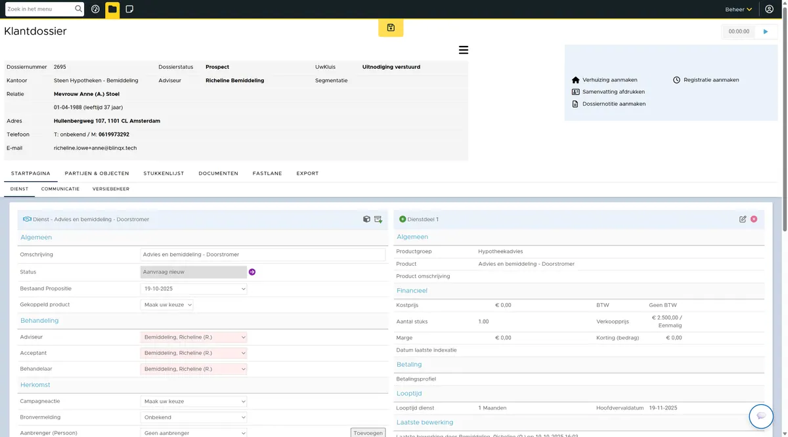
Stap 39
Activatiemail inzien
Zet de systeemregistraties op "Toon"
Stap 40
Activatiemail inzien
Klik op "zoeken"
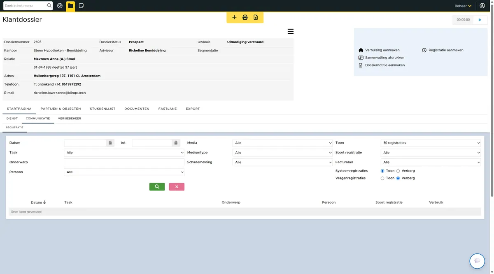
Stap 41
Activatiemail inzien
Hier zie je dat de mail verstuurd is vanuit het systeem
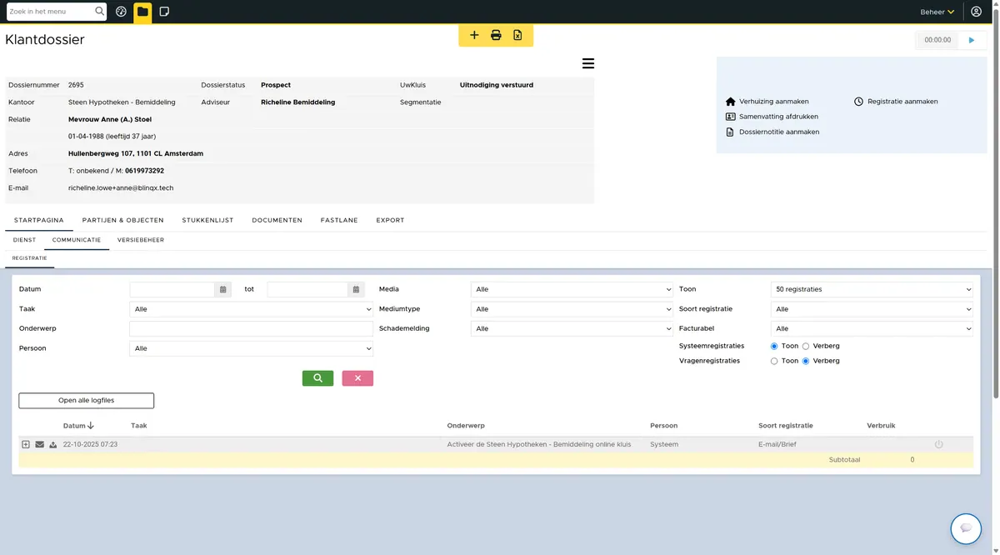
Stap 42
Activatiemail inzien
Hiermee is het mogelijk om de verstuurde mail in te zien
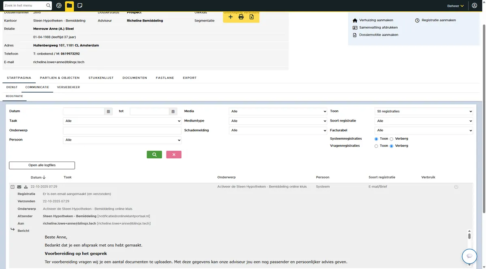
Stap 43
Het klantportaal (UwKluis / Online klantportaal) is aangemaakt
De klant dient het klantportaal (UwKluis / Online klantportaal) te activeren door een wachtwoord aan te maken.
De stappen voor de klant zijn te zien in het hoofdstuk "Klantview"
CRM-Stukkenlijst - copy
Stap 44
Stukkenlijst aanmaken
In de inventarisatiefase is het mogelijk om documenten op te vragen
Via het klantportaal (UwKluis / Online klantportaal) kan de klant documenten aanleveren.
Daarvoor is het benodigd om de gewenste documenten als stukkenlijst open te zetten in eBlinqx
De volgende stappen laten zien hoe dat kan
Stap 45
Stukkenlijst aanmaken
Klik op de workflow van de desbetreffende dienst
Stap 46
Stukkenlijst aanmaken
Indien er één klant is opgevoerd, wordt er een extra bevestiging gevraagd of dit correct is
De stukken wordt namelijk per aanvrager opgevraagd
Klik op de gewenste optie
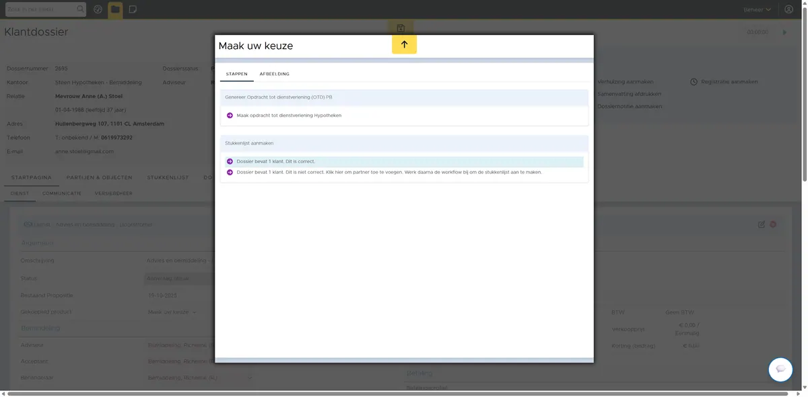
Stap 47
Stukkenlijst aanmaken
Afhankelijk van de klantsituatie stel je hier een stukkenlijst samen
Klik de onderdelen aan die van toepassing zijn
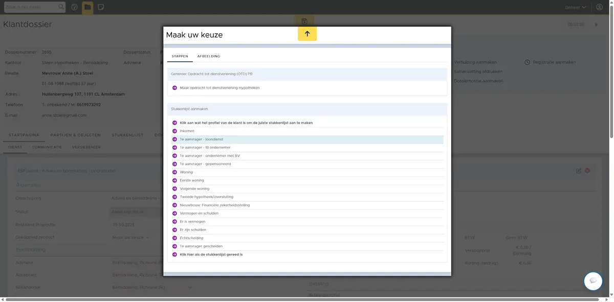
Stap 48
Stukkenlijst inzien
Ga je terug naar de dienst
Klik op "terug"
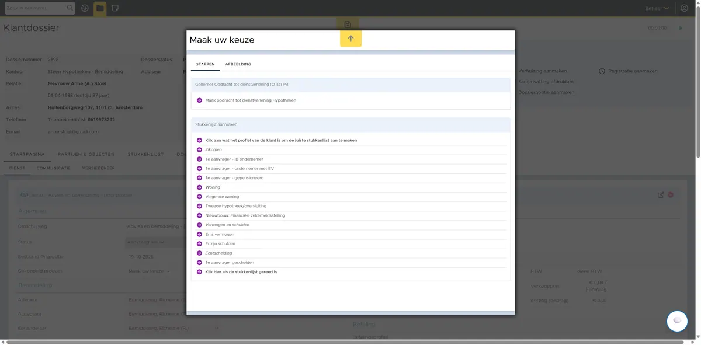
Stap 49
Stukkenlijst inzien
Klik op het tabblad "stukkenlijst"
Stap 50
Stukkenlijst inzien
Hier zie je alle openstaande stukken en geeft een overzicht van alle benodigde documenten om het dossier compleet te maken voor een toekomstige hypotheekaanvraag
De stukkenlijst is gebaseerd op de eerder gemaakte keuzes
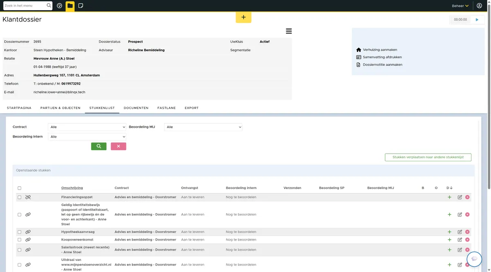
Stap 51
Stukkenlijst inzien
De meeste stukken zal de klant aanleveren
Hieraan is te zien of het stuk wordt opgevraagd via het klantportaal (UwKluis / Online klantportaal)
Dit is alleen zichtbaar nadat de klant het klantportaal (UwKluis / Online klantportaal) heeft geactiveerd
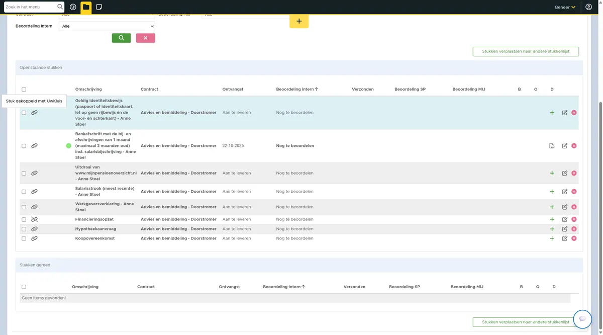
Stap 52
Stukkenlijst inzien
Voor sommige stukken is de adviseur verantwoordelijk, denk hierbij aan een financieringsopzet
Dit stuk wordt niet opgevraagd bij de klant. Voor je eigen dossiervorming is het stuk wel nodig. Daarom is het onderdeel van de stukkenlijst.
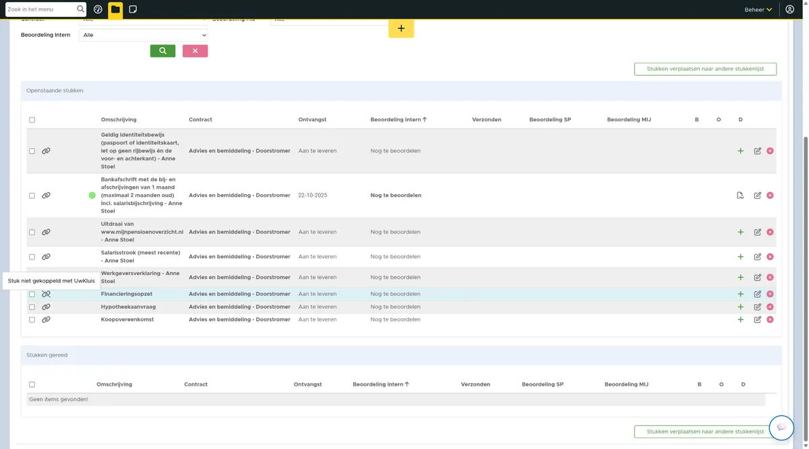
Stap 53
Stukkenlijst inzien
Onder "Omschrijving" zie je de benamingen van de stukken
Onder "Contract" zie je onder welk product, in dit geval dienst, de stukken opgevraagd zijn
Stap 54
Stuk verwijderen
Mocht de stukkenlijst niet passend zijn voor het dossier, kan een stuk verwijderd worden
Een stuk verwijderen kan door op
"kruis-teken " te drukkenStap 55
Stuk toevoegen
Een stuk toevoegen kan door op het "plus-teken" te drukken
Druk op het "plus-teken"
Stap 56
Stukken toevoegen
Kies hier aan welk product je een stuk wilt toevoegen
Je hebt twéé manieren om stukken toe te voegen
Template
Los stuk
Stap 57
Stukken toevoegen- Template
Kies uit de bestaande templates
Stap 58
Stukken toevoegen- Template
Hier kan je zien welke stukken vanuit een bestaande template toegevoegd worden
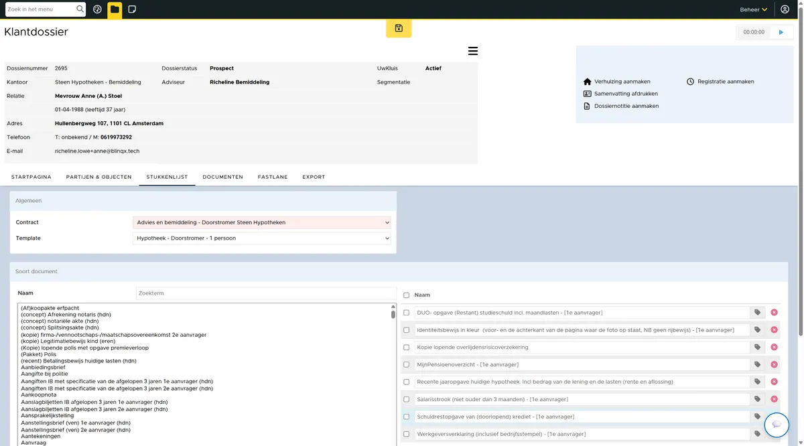
Stap 59
Opslaan
Klik op "opslaan"
Stap 60
Stukken toevoegen-Los stuk
Hier kan je een stuk opzoeken
Vul een zoekterm in
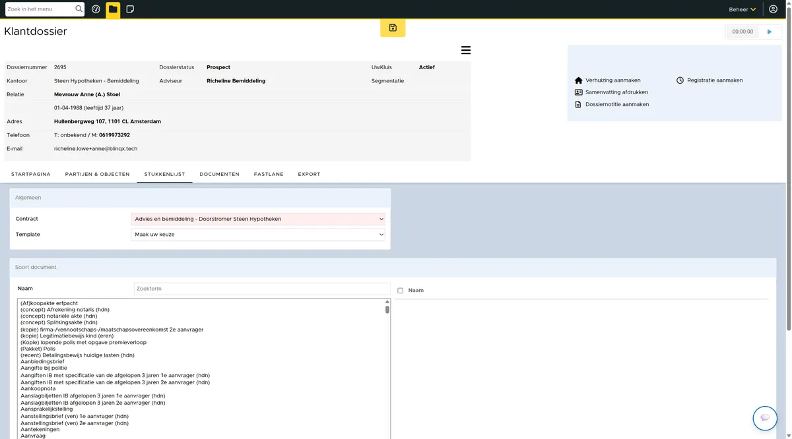
Stap 61
Stukken toevoegen- Los stuk
Hier zie je de resultaten van de zoekopdracht
Kies zover het mogelijk is altijd voor stukken met "(hdn)" erachter.
Hier heb je profijt van wanneer je een stukkenlijst van de geldverstrekker ontvangt
Dubbelklik op het gekozen stuk
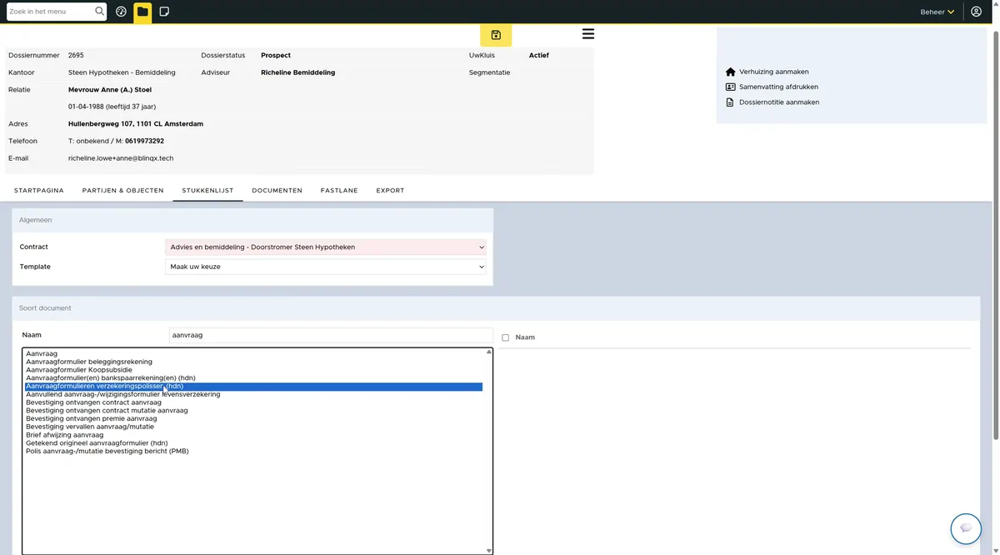
Stap 62
Stukken toevoegen- Los stuk
Het stuk is uit de lijst gekozen
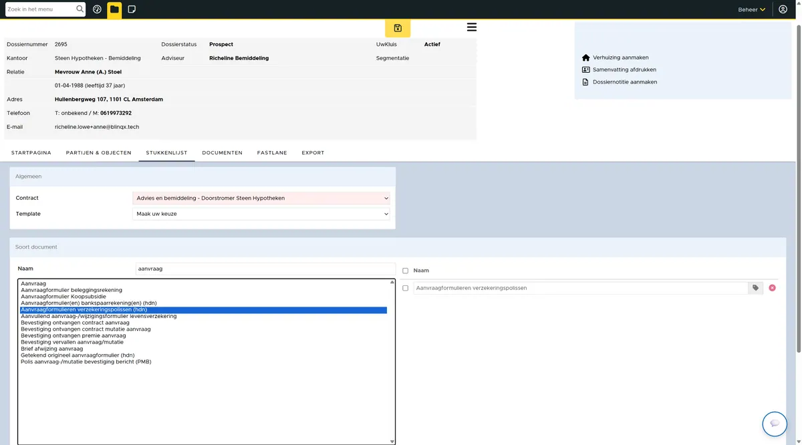
Stap 63
Opslaan
Klik op "opslaan"
CRM-OTD - copy
Stap 64
Opdracht tot dienstverlening maken
In dit onderdeel maken we een Opdracht tot dienstverlening.
In de volgende stappen gebruiken we de afkorting OTD
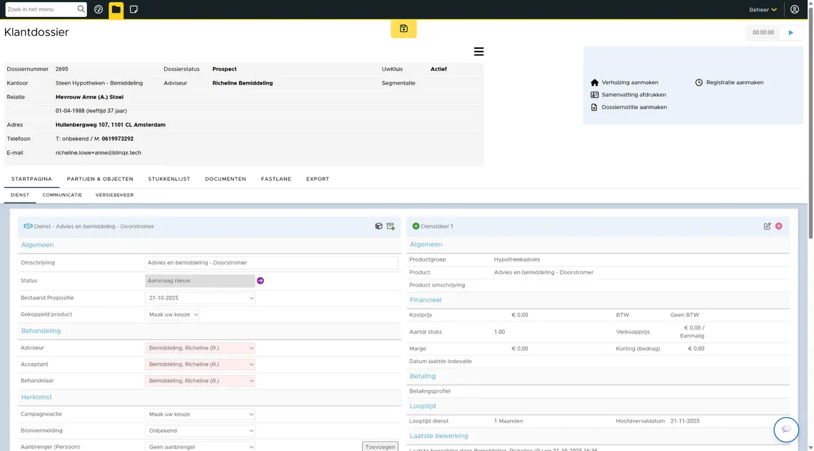
Stap 65
OTD aanmaken
Klik op de workflow-pijl van de dienst
Stap 66
OTD aanmaken
Klik op "Maak opdracht tot dienstverlening Hypotheken"
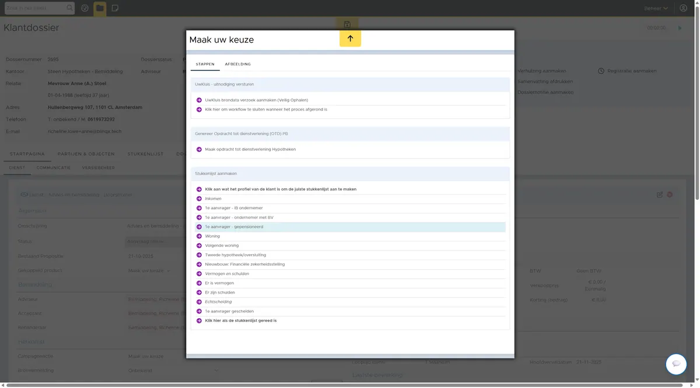
Stap 67
OTD aanmaken
Hier heb je de mogelijkheid om een deel van de standaard OTD aan te passen
Pas en/of vul de teksten aan
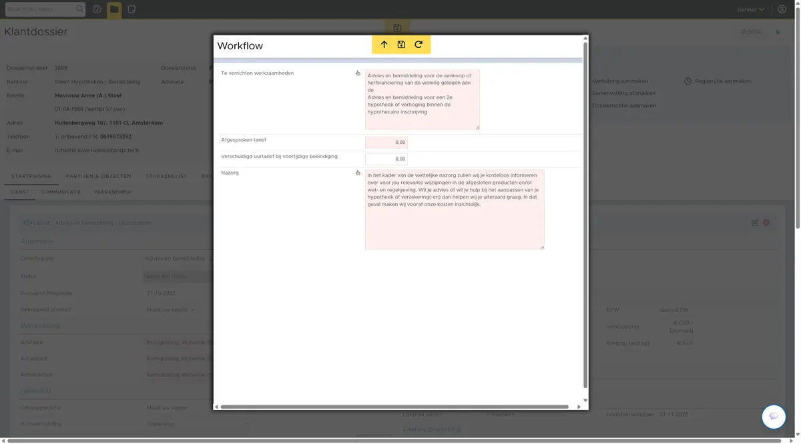
Stap 68
OTD aanmaken
Vul het tarief van de dienst in
Stap 69
Opslaan
Klik op "opslaan"
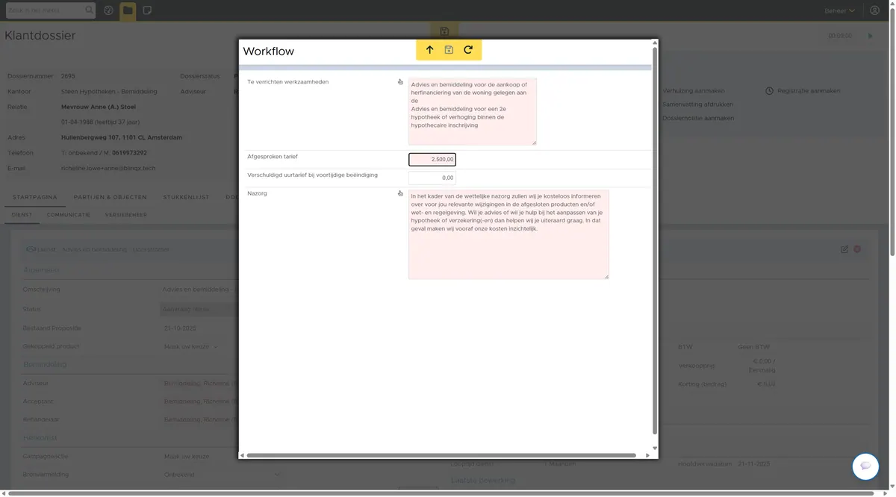
Stap 70
OTD inzien
Klik op "terug"
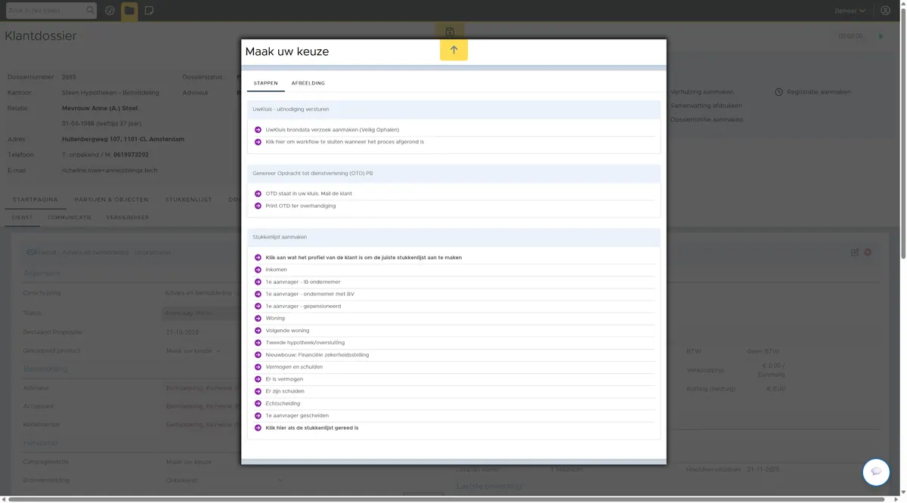
Stap 71
OTD inzien
Ga naar het tabblad "documenten"
Stap 72
OTD inzien
Hier is de aangemaakte OTD te zien
Dubbelklik op het document om deze zichtbaar te maken
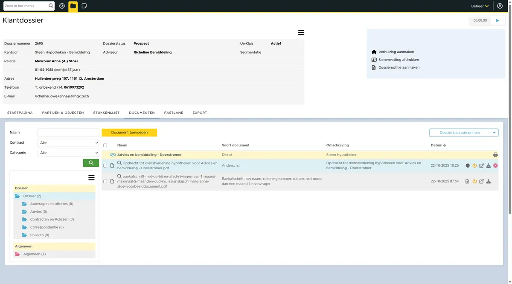
Stap 73
OTD inzien
In het document is de onderstaande informatie uit het dossier toegevoegd
Persoonlijke gegevens
(Aangepaste)Tekst blokken
Het tarief
De overige informatie is standaard ingeregeld.
Sluit het scherm af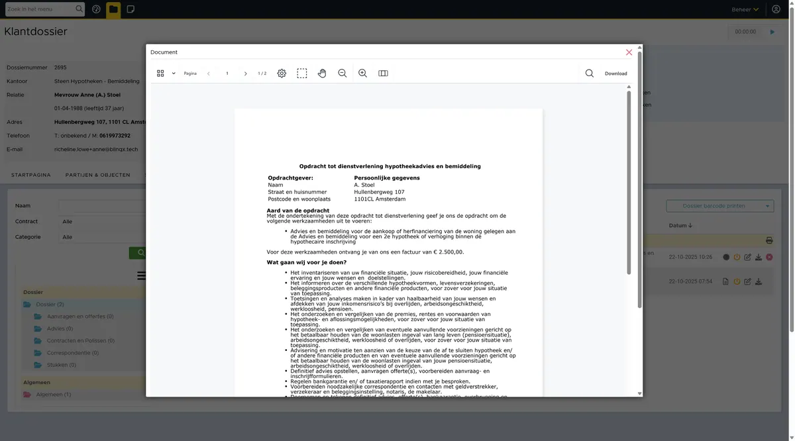
Stap 74
OTD versturen
Klik op de workflow-pijl van de dienst
Stap 75
OTD versturen
Om de OTD bij de klant te krijgen zijn er twéé mogelijkheden
Aanbieden via klantportaal (UwKluis / Online klantportaal)
Printen en overhandigen

Stap 76
OTD versturen -Aanbieden via klantportaal (UwKluis / Online klantportaal)
Maak de keuze in de workflow
Stap 77
OTD opvragen
In de stukkenlijst is een nieuw stuk toegevoegd
Dit zorgt ervoor dat de klant een getekende OTD via het klantportaal (UwKluis / Online klantportaal)kan aanleveren
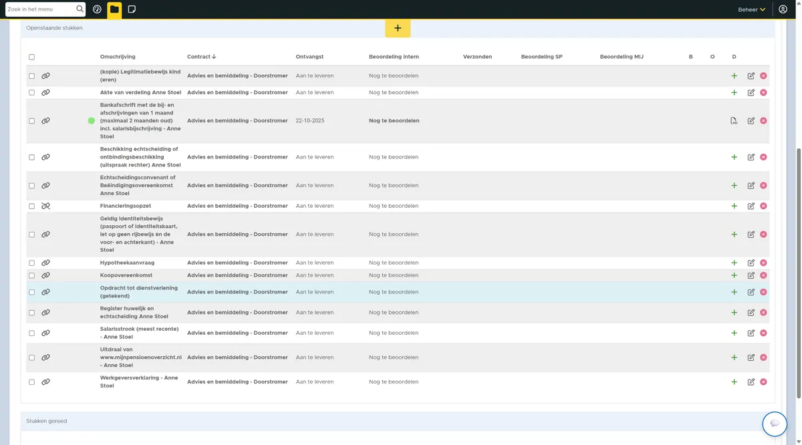
Stap 78
De OTD is beschikbaar
De OTD is via het klantportaal (UwKluis / Online klantportaal)
te downloaden én
een getekende versie kan geüpload worden
De klant wordt vanuit eBlinqx daar niet van op de hoogte gebracht
Indien de klant de app heeft gedownload en notificaties aan heeft staan, dan ontvangt de klant een notificatie in de app
Stuur een mail vanuit je eigen mailprogramma
Stap 79
OTD versturen
Klik op "Print OTD ter overhandiging"
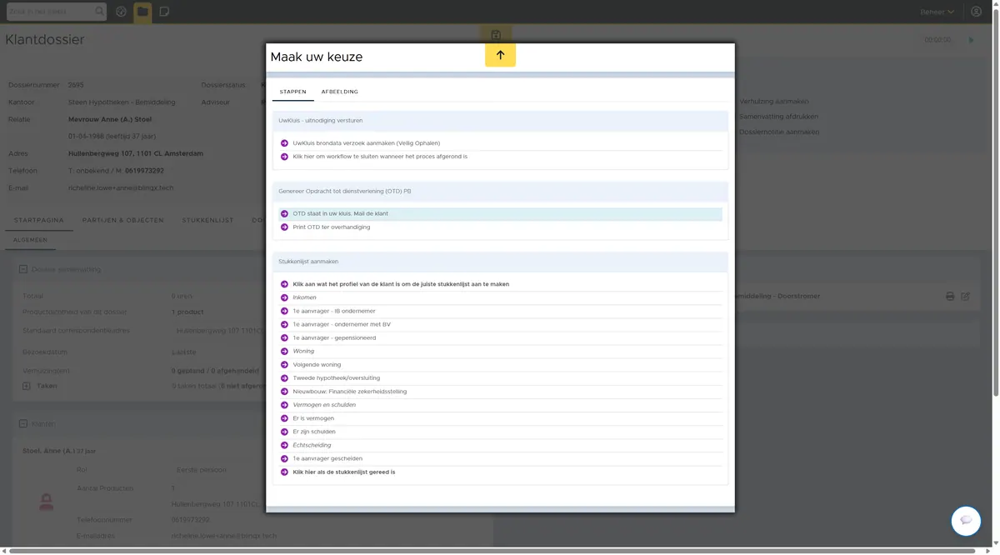
Stap 80
OTD Printen
Hier is het mogelijk om de OTD te downloaden/inzien en te printen
Klik op een van de iconen
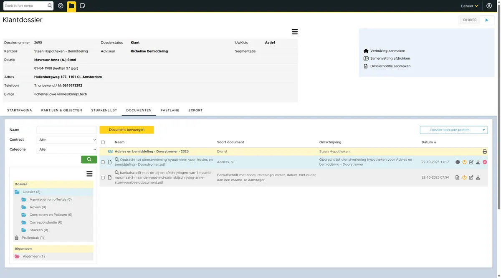
Stap 81
De OTD is geprint
Draag deze over aan de klant
De klant kan deze op twéé manieren aanleveren
Fysiek
via het klantportaal (UwKluis / Online klantportaal)
CRM-Aanvraag
Stap 82
Hypotheek Advies
Hier zullen we de stappen doorlopen hoe het hypotheek advies via eBlinqx op te bouwen is.
Stap 83
Fastlane
Druk op het tabblad "Fastlane"
Stap 84
Fastlane
Klik op "Dossier bekijken"
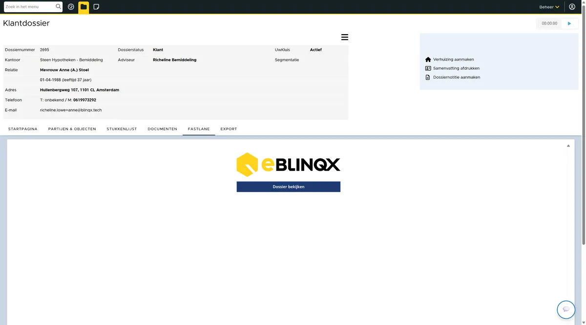
Fastlane - Inlog - copy
Stap 85
Inloggen
Eenmalig inloggen is benodigd
Gebruik de inloggegevens van Fastlane
Fastlane - Algemeen - copy
Stap 86
Navigatie kolom
Hier zie alle onderdelen die je in de adviescirkel kan doorlopen
Stap 87
Menu uitklappen
Met deze knop kan het menu uitgeklapt worden
Stap 88
Inventarisatie menu
Hier zie je alle onderdelen van de inventarisatie.
Deze doorloop je van boven naar beneden.
Inventarisatie -Klantgegevens - copy
Stap 89
Klantgegevens
Dit is het eerste onderdeel van de inventarisatiefase.
De klantgegevens zijn de basis voor alle berekeningen en adviezen die volgen.
Veel gegevens worden vanuit de CRM ingevuld.
Stap 90
Burgerlijke staat
De burgerlijke staat is een cruciale keuze. Op basis van deze keuze wordt er in de berekening rekening gehouden met één of twee aanvragers.
Kies hier de toekomstige situatie van de klant en niet de huidige.
Voorbeeld: twee ongehuwde personen die samen een woning kopen. Selecteer hier "Samenwonend"
Stap 91
Burgerlijke staat
Enkel bij een scheiding of ontslag hoofdelijke aansprakelijkheid kies je de situatie van vlak vóór het uit elkaar gaan.
Dit maakt het mogelijk om de bestaande woning en hypotheek fiscaal correct te splitsen.
Stap 92
Controle persoonlijke gegevens
Scrol naar beneden om de persoonlijke gegevens te controleren.
Vanuit het CRM-systeem worden deze velden grotendeels automatisch gevuld.
Vul de ontbrekende details zo volledig aan, zodat de berekening soepel verloopt.
Stap 93
Adres overnemen
Met één klik kun je het adres van de aanvrager kopiëren naar de partner
Stap 94
Opslaan
Klik op "opslaan"
Inventarisatie -Klantprofiel - copy
Stap 95
Klantprofiel
Ga door met de inventarisatie
Klik op "Klantprofiel"
Stap 96
Klantprofiel toevoegen
Maak per persoon een nieuw klantprofiel.
Druk op "Klantprofiel toevoegen"
Stap 97
Klantprofiel
Het klantprofiel is per persoon beschikbaar.
Partners kunnen verschillend denken over risico, zekerheid en toekomstplannen.
Op deze manier is de kennis, ervaring en risicobereidheid per persoon vastgelegd en zijn de verschillen inzichtelijk
Dit is de wijze waarop de toezichthouder dit het liefst ziet.
Druk op "Klantprofiel toevoegen"
Stap 98
Klantprofiel
Hier heb je een overzicht van de onderwerpen/ rubrieken van het klantprofiel
Stap 99
Klantprofiel
Klik op 'Start' om de vragenlijst te starten.
Stap 100
Klantprofiel vragen
Beantwoord de vragen in elk rubriek van het klantprofiel.
Het klantprofiel kan tijdens het gesprek ingevuld worden of via het klantportaal (UwKluis / Online klantportaal)
Antwoorden is verplicht
Stap 101
Klantprofiel vragen
Na het beantwoorden van de vragen in deze rubriek is het mogelijk door te gaan naar de volgende rubriek.
Druk op 'Volgende'
Inventarisatie -Woningen - copy
Stap 102
Woningen
Na het invullen van het klantprofiel volgt het onderdeel Woningen van de inventarisatie.
Klik op "Woningen" in het inventarisatie menu
Stap 103
Woningen
Hier is de huidige woning zichtbaar.
Indien toegevoegd zijn hier andere woningen in eigendom of de toekomstig aan te kopen woning zichtbaar.
Stap 104
Woning toevoegen
Een woning kan toegevoegd worden door op "woning toevoegen" te drukken
Stap 105
Woning bewerken
De gegevens van de opgevoerde woning kunnen bekeken en gewijzijgd worden.
Denk hierbij aan de woningwaarden, woningstatus en eigendomsverhouding.
Klik op het potlood-icoon
Stap 106
Woninggegevens
Hier zijn de gegevens over de woning zichtbaar.
Denk hierbij aan type woning, soort onderpand, aankoopdatum en de eigendomsverhouding
Stap 107
Eigendomsverhouding
De eigendomsverhouding is niet altijd aanpasbaar. Dit is het geval wanneer de burgerlijke staat "Gehuwd in gemeenschap van goederen" geselecteerd is.
Zo wordt voorkomen dat er een fiscaal onjuiste verdeling gemaakt wordt.Stap 108
Woningwaarde
Hier kan de WOZ-waarde, taxatiewaarde of marktwaarde worden vastgelegd.
Stap 109
WOZ-waarde
Met de WOZ-check kan de actuele WOZ-waarde opgehaald worden
Stap 110
Woningstatus
Hier kan aangeven worden of de woning verkocht zal worden.
Stap 111
Woning verkopen
Indien de woning verkocht wordt, verschijnen er aanvullende vragen.
Denk hierbij aan de status van de verkoop
Stap 112
Potentiële overwaarde
Op basis van verkoopprijs, kosten en openstaande hypotheek wordt de overwaarde berekend.
Stap 113
Overbruggingskrediet
In de inventarisatiefase wordt het overbruggingskrediet standaard berekend met 90% of 100%
Stap 114
Overbruggingskrediet
Gebaseerd op het gegeven of de woning al onvoorwaardelijk verkocht is of niet wordt het percentage bepaald
Onvoorwaardelijk verkocht
Nee -> 90%
Ja -> 100%Dit is een aanname en in de adviesfase kan in de berekening het percentage aangepast worden.
Stap 115
Opslaan
Klik op "opslaan"
Inventarisatie -Inkomen - copy
Stap 116
Inkomen
Na het invullen van de woning(en) volgt het onderdeel Inkomen van de inventarisatie.
Klik op "Inkomen" in het inventarisatie menu
Stap 117
Inkomensoverzicht
Hier wordt een overzicht weergegeven van de inkomstenbronnen van de aanvragers.
Toekomstig inkomen, zoals een pensioen, dient opgevoerd te worden onder het inventarisatie onderdeel "Werkgeversregelingen"
Is de aanvrager al met pensioen, dan betreft het een huidig inkomen en dient het pensioen onder het inventarisatie onderdeel "inkomen" opgevoerd te worden
Stap 118
AOW- uitkering
Het AOW-inkomen wordt automatisch berekend op basis van leeftijd.
Alleen bij een afwijkende AOW-opbouw, dient dit aangepast worden.Stap 119
Inkomen toevoegen
Er kunnen verschillende soorten inkomen toegevoegd worden
Klik op "Inkomen toevoegen" en selecteer het type inkomen
Stap 120
Inkomen uit loondienst
Hier worden de gegevens van het inkomen ingevuld
Stap 121
Soort inkomensdocument
Hier kan aangegeven worden op basis van welk gegeven het inkomen wordt ingevuld
Stap 122
Bruto salaris
Vul hier het bruto salaris exclusief de variabele componenten in.
Stap 123
Vakantiegeld
Dit wordt automatisch uitgerekend en ingevuld
Stap 124
Tijdvak brutosalaris
Selecteer hier het tijdvak van het ingevulde brutosalaris
Stap 125
Toevoegen overige componenten
Voeg eventueel andere vaste componenten toe, zoals een eindejaarsuitkering
Stap 126
Toevoegen overige componenten
Of een 13de maand
Gebruik alleen inkomen dat structureel en aantoonbaar is.
Stap 127
Werkgever
Vul hier de naam van de werkgever in
Stap 128
Werkgever zoeken
Vanuit de gegeven van de Kamer van Koophandel is het mogelijk werkgeversgegevens op te halen.
Stap 129
Selecteer Werkgever
Kies de juiste werkgever
Stap 130
Gegevens werkgever
De gegevens van de werkgever zijn toegevoegd
Stap 131
Opslaan
Klik op "opslaan"
Inventarisatie -Verplichtingen - copy
Stap 132
Verplichtingen
Na het invullen van het inkomen volgt het onderdeel Verplichtingen van de inventarisatie.
Klik op "Verplichtingen" in het inventarisatie menu
Stap 133
Verplichtingen
Hier kunnen alle financiële verplichtingen van de klant vastgelegd worden.
Stap 134
Verplichting toevoegen
Een verplichting kan toegevoegd worden door op "verplichting toevoegen" te drukken
Stap 135
Type verplichting
Verschillende typen verplichtingen kunnen vastgelegd worden.
Denk aan persoonlijke leningen, doorlopend krediet, private lease en studieschulden.
Stap 136
Studielening
Voor een correcte berekening van de draaglast van een studielening is het van belang om de volgende vier gegevens in te vullen
Ingangsdatum
Einddatum
Kredietbedrag
Rentepercentage
Stap 137
Ingangsdatum
Bij de ingangsdatum dient de berekeningsdatum op het document van DUO ingevuld te worden.
Wanneer de studie is begonnen is niet van belang.
Stap 138
Einddatum
De einddatum dient berekend te worden op basis van de resterende maanden van de lening op het document van DUO
Stap 139
Kredietbedrag en rentepercentage
Deze twee gegevens zijn te vinden op het document en kunnen overgenomen worden
Stap 140
Status
De status van een verplichting bepaalt hoe deze wordt meegenomen in de berekening.
Lopend De verplichting blijft bestaan en wordt volledig meegenomen in de toetsing.
Afgelost voor passeren De verplichting zal worden afgelost voor passeren en wordt niet meegenomen in de toetsing
Afgelost tijdens passeren de verplichting wordt meegenomen in de financieringsopzet.
Stap 141
Resultaat
Op basis van de ingevulde gegevens wordt er een berekening gemaakt. Hier is het resultaat daarvan te zien
Stap 142
Opslaan
Klik op "opslaan"
Inventarisatie -Werkgeversregelingen - copy
Stap 143
Werkgeversregelingen
Na het invullen van de verplichtingen volgt het onderdeel Werkgeversregelingen van de inventarisatie.
Klik op "Werkgeversregelingen" in het inventarisatie menu
Stap 144
Werkgeversregelingen
Hier wordt een overzicht gegeven van de toekomstige inkomstenbronnen van de aanvragers.
Denk hierbij aan pensioeninkomen en regelingen via de werkgever, zoals loondoorbetaling bij ziekte.
Is de aanvrager al met pensioen, dan betreft het een huidig inkomen en dient het pensioen onder het inventarisatie onderdeel "inkomen" opgevoerd te worden
Stap 145
Loondoorbetaling bij ziekte
Deze vorm van inkomen wordt automatisch gevuld.
Stap 146
Uitgangspunten
Standaard wordt aangenomen dat de uitbetaling als volgt verloopt
Eerste jaar 100%
Tweede jaar 70%
Stap 147
Werkgeversregeling toevoegen
Er kunnen verschillende soorten regelingen toegevoegd worden
Klik op "werkgeversregeling toevoegen" en selecteer het type inkomen
Stap 148
Pensioenregeling toevoegen
Hier worden de gegevens van het pensioen ingevuld
Dit gaat om het inkomen ná pensionering.
Dit inkomen wordt niet meegenomen in de huidige toetsing, maar wordt meegenomen in de betaalbaarheid voor de lange termijn.
Stap 149
Bruto jaarinkomen
Zodra dit bedrag is vastgelegd, wordt het automatisch meegenomen in de scenario's voor de toekomst
Stap 150
Opslaan
Klik op "opslaan"
Inventarisatie-Hypotheek - copy
Stap 151
Huidige hypotheek
Na het invullen van de werkgeversregelingen volgt het onderdeel "Huidige hypotheek" van de inventarisatie.
Klik op "Huidige hypotheek" in het inventarisatie menu
Stap 152
Hypotheekoverzicht
Hier wordt een overzicht gegeven van alle bestaande hypotheken
Stap 153
Hypotheek toevoegen
Klik op "hypotheek toevoegen"
Stap 154
Hypotheek toevoegen
Hier kunnen de specifieke gegevens van de hypotheek opgevoerd worden.
De gegevens die hier vastgelegd worden zijn van belang voor de berekeningen.
De eerste hypotheek die ingevoerd is, wordt automatisch de hoofdhypotheek.
Stap 155
Hypotheek toevoegen
Indien er meerdere hypotheken in het dossier opgevoerd zijn, dan is de bovenste hypotheek altijd de hoofdhypotheek.
Voorbeeld
Een stel met beide een eigen woning, gaan nu samen een woning kopen. Een van de hypotheken wordt meegenomen naar de nieuwe woning in verband met voorwaarden. De mee te nemen hypotheek dient als hoofhypotheek meegenomen te wordenDe volgorde aanpassen kan door het slepen van de hypotheek in het hypotheekoverzicht
Stap 156
Hoofdsom
Vul hier de oorspronkelijke hoofdsom in. De schuldstand wordt automatisch doorgerekend naar vandaag.
Stap 157
Leningdeel toevoegen
De totale hypotheek dient leningdelen te bevatten
Deze melding blijft aanwezig totdat deze toegevoegd zijn
Klik op "Leningdeel lijkt te ontbreken"
Stap 158
Product
Vul hier de aflossingsvorm in.
Stap 159
Schuld verloop
Hier is de huidig stand van de schuld te zien
Stap 160
Extra aflossing
Heeft de klant een extra aflossing gedaan, dan dient dat opgevoerd te worden door een regel toe te voegen.
Klik op "Regel toevoegen"
Stap 161
Extra aflossing
Vul hier de werkelijke schuldstand in, met de bijbehorende datum en druk op het vinkje
Stap 162
Overige leningdeel gegevens
Voeg de overige informatie over het lening toe
Stap 163
Opslaan
Klik op "opslaan"
Stap 164
Huidige schuldrest
Hier is te zien wat de huidige schuldrest is.
Het uitgangspunt is de oorspronkelijke hoofdsom rekening houdend met het schuldverloop en de extra aflossing
Inventarisatie-FiscaalPaspoort - copy
Stap 165
Fiscaal Paspoort
Hiermee kan de fiscale situatie van de klant worden vastgelegd.
Dit onderdeel bevindt zich nog in de bètafase en wordt daarom verder niet toegelicht.
Inventarisatie -Vermogen - copy
Stap 166
Vermogen
Na het invullen van de huidige hypotheek volgt het onderdeel Vermogen van de inventarisatie.
Klik op "Vermogen" in het inventarisatie menu
Stap 167
Vermogensoverzicht
Hier wordt een overzicht weergeven van het beschikbaar vermogen van de klant.
Vermogen staat los van inkomen en betreft een momentopname.
Stap 168
Vermogenssoort
Je kunt verschillende vormen van vermogen vastleggen.
Denk aan spaargeld, betaalrekeningen en overige vrij beschikbare middelen.
Stap 169
Spaarrekening
De bedragen die zijn opgevoerd als spaarrekening worden gebruikt als eigen inbreng voor kosten koper en eventuele aflossingen
De hoogte van het vermogen wat ingezet wordt kan aangepast worden.
Stap 170
Betaalrekening
De betaalrekening die hier ingevuld wordt, zal gebruikt als incassorekening voor de hypotheek.
Dit rekeningnummer wordt automatisch doorgezet naar de HDN-aanvraag.
Stap 171
Rekeningeigenaar
Bij twee aanvragers is het mogelijk om het vermogen per persoon vast te leggen.
Dit is vooral relevant bij een ongelijke inbreng. De verdeling hiervan wordt meegenomen in het advies en de motivatie.
Inventarisatie -Verzekeringen - copy
Stap 172
Verzekeringsoverzicht
Hier wordt een overzicht weergegeven van de bestaande verzekeringen
Dit betreft enkel de huidige situatie
Stap 173
Verzekering toevoegen
Er kunnen verschillende soorten verzekeringen toegevoegd worden
Klik op "verzekering toevoegen" en selecteer de verzekering
Stap 174
Verzekering toevoegen
Vul hier de polis gegevens in van de bestaande verzekering.
De gegevens die hier worden vastgelegd worden meegenomen in de risicoanalyse
Stap 175
Soort verzekering
Kies hier wat voor soort verzekering het is
Stap 176
Leningdeel
Indien de verzekering verpand is, geef aan aan welk leningdeel de verzekering gekoppeld is. Bij een levensverzekering kies je het gekoppelde leningdeel.
Stap 177
Opslaan
Klik op "opslaan"
Adviseren - overzicht - copy
Stap 178
De inventarisatie is afgerond
De volgende stap is de rekenmodule (Adviseren)Stap 179
Adviseren
Klik op het icoon om naar de adviesmodule (Adviseren) te gaan
Stap 180
Nieuwe berekening
Alle informatie wat is vastgelegd in de inventarisatie wordt meegenomen in de berekening.
Het is mogelijk om meerdere berekeningen te maken en op te slaan binnen één dossier
Geef de berekening een herkenbare naam
Klik op "Nieuwe berekening" om te starten
Stap 181
Onderdelenoverzicht
In de volgende onderdelen komen de inventarisatie gegevens terug
Onderpand
Inkomen
NAWTE per aanvrager
Verplichtingen
Bestaande hypotheek
Bestaande verzekeringen
De overige onderdelen kunnen hier aangevuld worden
Stap 182
Onderdelenoverzicht
Elk onderdeel kan geopend en gesloten worden
Open en sluit de onderdelen per keer om het overzicht te behouden het scrollen te minimaliseren
Adviseren - Doelstelling - copy
Stap 183
Doelstelling
Hier kan aangegeven wordt wat het doel is van de berekening
De huidige situatie geeft een mooi beeld hoe de klant er nu voor staan
Daarnaast kunnen meerdere berekeningen gemaakt worden om meer inzicht te geven in de overweging om te verkopen of te verbouwen
Klik op "een bestaande woning kopen"van de doelstellingen
Stap 184
GHF of CBI
De berekeningen kunnen uitgaan van de maximale hypotheek op basis van de Gedragscode of het consumptief besteedbaar inkomen.
Met een simpele instelknop kan het uitgangspunt van de berekening aangepast worden.
Stap 185
Omschrijving
Hier kan er een herkenbare naam voor de berekening meegegeven worden
Adviseren - Onderpand - copy
Stap 186
Onderpand
Bij aankoop van een nieuwe woning kan hier de gegevens ingevuld worden van de aan te kopen woning.
Op basis van postcode en huisnummer worden gegevens automatisch opgehaald.
Stap 187
Woningwaarden
Vul de WOZ-waarde aan de hand van de WOZ-waarde checker
De indexatie staat standaard op 2%. Dit zou eventueel in de instellingen aangepast kunnen worden
Indien nodig pas de marktwaardes aan.
RWWR- waardebepaling is vergelijkbaar met Calcasa
De aanpassingen die hier gedaan worden zijn te zien in de financieringsopzet, de leencapaciteit, de maandlasten en de risico's.
Adviseren -Financieringsopzet - copy
Stap 188
Financieringsopzet
Hier kan de financieringsopzet opgebouwd worden.
Veel velden worden automatisch gevuld en zijn aanpasbaar
Het aanpassen van de gegevens kan per dossier. De standaardwaarden kunnen in de instellingen aangepast worden.
Stap 189
Energiebespaarbudget
Dit budget kan handmatig toevoegd worden. Vanuit de instellingen kan er voor gekozen worden om deze standaard aan of uit te zetten
Stap 190
Tarief overdrachtsbelasting
Deze staat standaard op 2% en kan handmatig aangepast worden
Uit ervaring is gebleken dat de check of de klant voldoet aan de voorwaarden voor een
0%-tarief vaak vergeten wordtStap 191
Eigen geld
Hier wordt vastgelegd hoeveel eigen geld wordt ingebracht.
Denk hierbij aan spaargeld of de overwaarde uit verkoop.Het eigen geld staan in eerste instantie bij de eerste aanvrager, maar kan ook verdeeld worden
Stap 192
Overbruggingshypotheek
De standaard overbruggingspercentage van 90% of 100% uit de inventarisatiefase kan hier overschreven worden
Stap 193
Overbruggingshypotheek
Klik voor de overbruggingsberekening hierop
Stap 194
Overbruggingshypotheek
Hier wordt een uiteenzetting van de berekening getoond
Adviseren -Hypotheekopbouw - copy
Stap 195
Hypotheek samenstellen
Hier kan de hypotheekconstructie concreet gemaakt worden door de volgende gegevens vast te leggen:
Leningdelen
Aflosvorm
Looptijd
Rente
Stap 196
Bestaande leningdelen
Bestaande leningdelen zijn zichtbaar en worden standaard meegenomen naar de nieuwe situatie.
Dat is handig bij bijvoorbeeld verhuizing met behoud van leningdelen of bij een constructie die deels blijft staan.
Controleer altijd: rentevaste periode, resterende looptijd en fiscale kenmerken.
Stap 197
Bestaande leningdelen
Dient het leningdeel niet meegenomen te worden. Zet het vinkje uit.
Stap 198
Leningdeel toevoegen
Indien er extra financiering nodig is, is het mogelijk om met één knop een aanvullende leningdeel met het juiste bedrag toe te voegen.
Klik op "leningdeel toevoegen"
Stap 199
Leningdeel aanpassen
Per leningdeel kan de hoogte, aflosvorm, looptijd en rentevaste periode aangepast worden
Een aanpassing heeft uiteraard invloed op de maandlast
Stap 200
Overbrugging
Onder de leningdelen, wordt de informatie van de overbrugging getoond.
Stap 201
Vergelijk geldverstrekkers
Wanneer de hypotheekconstructie helemaal staat, kunnen de geldvertrekkers vergeleken worden.
Klik op "vergelijk geldverstrekkers"
Stap 202
Vergelijking geldverstrekkers
Hier is de vergelijking van geldverstrekkers zichtbaar en kan er op basis van deze resultaten een keuze gemaakt worden
Kies een geldverstrekker
Stap 203
Duurzame producten
In het kader van verduurzamen, is het mogelijk om enkel duurzame producten te tonen
Selecteer de filter
Stap 204
Voorwaarden geldvertrekker
Hier worden de voorwaarden van de geldverstrekker getoond.
Klik op "Toon voorwaarden"
Stap 205
Voorwaarden geldverstrekkers
De meest relevante voorwaarden worden hier getoond. Om alle voorwaarden zichtbaar te krijgen, kan het overzicht uitgebreid worden met "Toon meer"
Adviseren - Resultaten bespreken - copy
Stap 206
Resultaat berekeningen
Op basis van alle opgevoerde informatie is het resultaat in één overzicht te zien.
Naast de haalbaarheid is het ook te zien wat verantwoord is.
Bij het aanpassen van componenten die van belang zijn voor de berekening, wordt het resultaat gelijk aangepast en is de impact inzichtelijk.
Stap 207
Foto woning aanpassen
De foto van de woning wordt opgehaald uit streetview en zal getoond worden in het adviesrapport.
Indien hier geen foto van de woning getoond wordt, heeft Streetview de informatie niet en kan dit toegevoegd worden.
Klik op de foto
Stap 208
StreetView
Controleer of de afbeelding handmatig vannuit Streetview opgehaald worden.
Stap 209
Eigen afbeelding
Het uploaden van een eigen foto is een mogelijkheid
Stap 210
Presentatiemodus
De resultaten kunnen in een presentatie modus getoond worden.
Stap 211
Presentatiemodus
Het menu verdwijnt waardoor er meer ruimte is voor de resultaten.
Dit is een fijne modus om samen met de klant te doorlopen
Stap 212
Legenda
Per tabel is het mogelijk om aan te geven welke informatie op dat moment getoond dient te worden.
Voorbeeld:
De partner kan uitgezet worden om het scenario uit elkaar te besprekenStap 213
Grafiek vergroten
Hiermee kan de grafiek vergroot worden weergegeven.
Stap 214
Grafiek
Dit is duidelijker zichtbaar voor de klant.
Ook hier kan de legenda aangepast worden indien nodig
Stap 215
Verantwoord blijven wonen
In dit tabel worden de volgende scenario's visueel getoond
Arbeidsongeschiktheid
Werkloosheid
Overlijden
Einde relatie
AOW
Stap 216
Verantwoord blijven wonen
Per scenario is het per persoon inzichtelijk of er sprake is van een tekort.
Tekorten worden in het rood weergeven
Stap 217
Verantwoord blijven wonen
Per tabel kan de situatie nader bekeken worden.
Bestaande verzekeringen die in de inventarisatie zijn aangevinkt worden meegenomen in de berekening.
Klik op een onderdeel van het scenario om meer informatie te zien
Stap 218
Arbeidsongeschiktheid
In dit scenario wordt er gekeken of de toetslast van de hypotheek verantwoord is op basis het resterend inkomen wanneer een persoon niet meer volledig kan werken bij ziekte.
Werkgeversregelingen, zoals Loondoorbetaling bij ziekte hebben invloed op het resultaat.
Stap 219
Werkloosheid
In dit scenario wordt er gekeken of de toetslast van de hypotheek verantwoord is op basis het resterend inkomen wanneer een persoon tijdelijk werkloos is.
Stap 220
Overlijden
In dit scenario wordt er gekeken of de toetslast van de hypotheek verantwoord is op basis het resterend inkomen van de achtergebleven partner.
Stap 221
Overlijdensrisicoverzekering
Bij een tekort wordt er een ORV voorgesteld .
Het verzekerd bedrag is afgestemd op het gesignaleerde risico.
Adviseren - Verzekeringsopbouw - copy
Stap 222
Verzekeringen samenstellen
In dit onderdeel worden de verzekeringen samengesteld op basis van de eerder uitgevoerde risicoanalyse.
Op basis van de niet afgedekte risico's wordt er een voorstel gedaan.
Stap 223
Voorgestelde verzekeringen
Op basis van de scenario's kunnen de volgende verzekeringen aangeboden worden:
- WW en/of AO Woonlasten
- Inkomensbeschermer
- Nazorgabbonement
- OverlijdensrisicoverzekeringStap 224
Verzekerde bedragen
Het tekort uit het scenario wordt als verzekerd bedrag genomen
Vul eventueel de benodigde informatie in
Stap 225
Verzekeringsaanbieders
Het uitgangspunt is de verzekeringspartij met de goedkoopste premie
Stap 226
Verzekeringen vergelijken
Uiteraard blijft het mogelijk om de verzekeringspartijen te vergelijken en een andere keuze te maken
Adviseren - Extra informatie - copy
Stap 227
Extra informatie en mogelijkheden
In de balk zijn er diverse iconen die uiteengezet worden
Stap 228
Aanvullende informatie
Hier is een snelkoppeling te vinden naar specifieke informatie
Naslagwerk betreft de SEH Adviespocket
Stap 229
Actualiseer de berekening
Klik op het icoon voor uitleg
Stap 230
Uitleg actualiseren
Zie hier de randvoorwaarden
Adviseren - vergelijken - copy
Stap 231
Vergelijk berekeningen
Het is mogelijk om berekeningen met elkaar te vergelijken
Klik op het icoon
Stap 232
Berekeningen toevoegen
Voeg tot maximaal drie berekeningen toe in de vergelijking
Voorbeeld: Voor de overweging verbouwen of verhuizen kan
de huidige situatie,
verbouwen/verduurzamen en
nieuwe woning naast elkaar geplaatst worden
Adviseren - snelle berekening - copy
Stap 233
Tooling
Hier is het mogelijk om "snelle" berekening te maken
Stap 234
Tooling
Op basis van minimale gegevens kan een maximaal hypotheek bedrag of toetslast berekend
Klik na het invullen van de gegevens op "Berekenen"
Adviseren - opslaan/down/maken - copy
Stap 235
Berekeningen downloaden
Hier heb je de mogelijkheid om rapporten te downloaden
Stap 236
Rapport samenstellen
Hier kan aangegeven worden wat voor soort rapport er gedownload dient te worden en uit welke onderdelen deze dient te bestaan
Stap 237
Berekening opslaan
Hier kan de huidige berekening opgeslagen worden
Stap 238
Benaming berekening
Hier kan de berekening een herkenbare naam gegeven worden
Motiveren - adviesrapport - copy
Stap 239
Motiveren
Alle berekeningen zijn gedaan en de risico's zijn doorlopen
Nu kan het adviesrapport samengesteld worden.
Klik op 'Motiveren'
Stap 240
Adviesmotivatie
Het adviesrapport bundelt alle keuzes, berekeningen en onderbouwingen samen.
Dit is het document waarmee wordt uitgelegd: wat we adviseren, waarom, en wat de klant daarvan merkt.Stap 241
Presentatiemodus
Ook hier is de presentatie modus beschikbaar
Stap 242
Tekstenbibliotheek
De tekstenbibliotheek bevat vooraf ingerichte standaardteksten per onderdeel.
Deze teksten zijn bedoeld om het advies te structureren en te versnellen.
Het rapport hoeft niet elke keer opnieuw geschreven te worden, omdat veel onderdelen automatisch gevuld worden
Stap 243
Adviesrapport downloaden
Het rapport vormt de afsluiting van het adviestraject.
Hier kan het rapport gedownload worden .
Stap 244
Rapportage
Maak een keuze voor het soort rapport.
Stap 245
Volledig adviesrapport
Kies voor "Adviesrapport" voor een rapport met alle componenten.
Stap 246
Rapportsecties
Hier is het mogelijk om de gewenste rapportsecties toe te voegen of te verwijderen
HDN-aanvraag - copy
Stap 247
HDN aanvraag
Nu het adviesrapport afgerond is, kan de HDN-aanvraag opgebouwd worden.
Stap 248
HDN-aanvraagoverzicht
Hier zie je alle HDN-aanvragen die klaarstaan om verstuurd te worden
Deze aanvragen komen uit de onderdelen hypotheek en verzekering samenstellen
Stap 249
HDN-aanvraag starten
Klik op 'Start HDN aanvraag'
Stap 250
HDN-aanvraag
Om een HDN-aanvraag te kunnen versturen dienen bepaalde gegevens correct in het formulier ingevuld te zijn
Is dat niet het geval, dan is dat hier zichtbaar.
Stap 251
Aandachtspunten
Zolang niet alles compleet is, kan de aanvraag niet verzonden worden
Hoe zorgvuldiger de eerdere fases zijn ingevuld, hoe minder aandachtspunten er zullen zijn.
Het kan voorkomen dat de verstrekker aanvullende informatie nodig heeft die tijdens de inventarisatie niet aan bod is gekomen
Loop elk onderdeel langs en los de aandachtspunten op.
Stap 252
HDN aanvraag verzenden
Zodra alle velden zijn ingevuld, kan de aanvraag verzonden worden.
De aanvraag gaat naar de eBlinqx omgeving en vanuit daar wordt de aanvraag naar de verstrekker verstuurd
CRM- HDN verwerken - copy
Stap 253
Aanvraag
Nadat de aanvraag vanuit het adviesprogramma verstuurd is, komt deze binnen in eBlinqx
De volgende stappen geven aan hoe de aanvraag verwerkt dient te worden
Stap 254
Inkomende berichten
Onder de tegel "binnenkomende berichten" vind je de HDN-berichten
Klik op de inkomende HDN-berichten
Stap 255
HDN-inbox
Hier vind je alle binnenkomende HDN-berichten
Type AX betreft een hypotheekaanvraag
Stap 256
HDN-inbox
Aan de status is te zien welke berichten nog verwerkt dienen te worden
Stap 257
HDN-bericht verwerken
Klik op het "potlood-icoon"
Stap 258
Gegevens aanvullen
Hier zijn de gegevens die bevestigd dienen te worden
Stap 259
Gegevens ophalen
Haal de informatie erbij om de gegevens correct over te nemen
Klik op het informatie-icoon
Stap 260
Gegevens aanvullen
Vul de gegevens aan
Stap 261
Inkoop via
Hier kan er aangegeven worden of de aanvraag rechtsreeks bij de maatschappij wordt aangevraagd of via een Serviceprovider
Stap 262
Opslaan
Klik op "opslaan"
Stap 263
HDN-bericht verwerkt
Aan het vinkje is te zien, dat het bericht correct verwerkt is
Stap 264
HDN-bericht verwerkt
Daarnaast is het dossier aangevuld met de hypotheek aanvraag
Klik op de hypotheekofferte
Stap 265
Rente aanbod
Aan de status is te zien dat het rente aanbod aangevraagd is
Stap 266
Rente aanbod
Het rente aanbod is aangevraagd via HDN
CRM-Bemiddeling - copy
Stap 267
Hypotheekbemiddeling
Nadat de aanvraag gedaan is, kan de workflow op twéé manieren naar een volgende stap gaan
door een keuze van de gebruiker
door een HDN-bericht
Ga naar de workflow van de hypotheek
Stap 268
Hypotheekbemiddeling
Deze opties zijn zichtbaar nadat het rente aanbod is aangevraagd
Stap 269
Rente aanbod ontvangen
Per mail word je vanuit eBlinqx op de hoogte gesteld dat er een rente aanbod ontvangen is
Stap 270
Rente aanbod ontvangen
Klik op het tabblad "documenten"
Stap 271
Rente aanbod
Hier zijn de documenten van de geldverstrekker te vinden
Open het rente aanbod en bekijk het document
Stap 272
Hypotheekbemiddeling
Ga naar de workflow van de hypotheek
Stap 273
Rente aanbod ontvangen
De optie "Renteaanbod ontvangen" is automatisch gekozen omdat het renteaanbod via HDN ontvangen is
Hier kan handmatig aangegeven worden of het rente aanbod correct is
Stap 274
Rente aanbod ontvangen
Het rente aanbod dient in dit geval getekend te worden
Dit is een gegeven wat in het HDN-bericht van de geldverstrekker zit.
Klik op "Renteaanbod correct en dient getekend te worden"
Stap 275
Renteaanbod overdragen
Hier kan de keuze gemaakt worden om het renteaanbod
te mailen (eigen mailprogramma)
fysiek over te dragen
Dit kan per gebruiker en per dossier bepaald worden
Stap 276
HDN-stukkenlijst
De stukkenlijst wordt op basis van een HDN-bericht aangevuld.
Dit zijn documenten die de geldverstrekker opvraagd
Stap 277
HDN-stukkenlijst
De stukkenlijst van de geldverstrekker zal gevuld worden met de documenten die in de inventarisatiefase ontvangen en akkoord bevonden zijn
Stap 278
HDN-Stukken versturen
Zodra de documenten beoordeeld zijn door de gebruiker, staan ze onder "Stukken gereed"
Stap 279
HDN-stukken versturen
Klik op "Verzend stukken naar maatschappij"
Stap 280
De HDN-stukken zijn verstuurd
Na het versturen van de HDN-stukken zal de communicatie tussen de geldverstrekker en eBlinqx via HDN gaan
Verzonden: datum wanneer de stukken verzonden zijn naar de geldverstrekker
Beoordeling SP: Documentstatus van een serviceprovider
Beoordeling MIJ: Documentstatus van de geldverstrekker
Stap 281
Aandachtspunten
Als adviseur ontvang je mails vanuit eBlinqx op cruciale momenten
Volg de workflow en klik enkel aan wat van toepassing/wenselijk is
De klant krijgt geen mails vanuit eBlinqx. Stuur aanvullend een mail uit een eigen mailprogramma
De klant ontvangt notificaties in de UwKluis / Online klantportaal app
Fastlane - Instellingen - copy
Stap 282
Instellingen
Binnen Fastlane is het mogelijk om bepaalde instellingen aan te passen.
Denk hierbij aan bijvoorbeeld aan standaardwaarden
Stap 283
Instellingen
Klik op het tandwiel-icoon
Stap 284
Instellingenoverzicht
Hier is een overzicht van alle onderdelen die aanpasbaar zijn.
We behandelen enkel de onderdelen die voor Fastlane van belang zijn:
Fastlane Algemeen
Logo uploaden
Tarieven
Rapport samenstellen
Tekstenbibliotheek
Stap 285
Instellingen - Algemeen
Hier is het mogelijk om het rekengedrag van Fastlane in te stellen.
Klik op "Fastlane Algemeen"
Stap 286
Instellingen - Algemeen
De meest gebruikte aanpassingen zijn
Ernergiebbespaarbudget (EEB)
Standaard wordt op basis van het energielabel een EBB toegevoegd in de berekening. Hier kan dat uitgezet worden.CBI
Indien de berekeningen standaard op CBI gedaan dienen te worden, kan dat hier aangezet worden.
Stap 287
Opslaan
Klik op "opslaan"
Stap 288
Instellingen - Logo uploaden
Hier is het mogelijk om een logo te uploaden.
Klik op "Logo uploaden"
Stap 289
Logo uploaden
Dit logo zal getoond worden op de (advies)rapporten
Stap 290
Instellingen - Tarieven
Klik op "Tarieven"
Stap 291
Tarieven
Hier zijn alle tarieven zichtbaar.
Per tarief is in te stellen of deze getoond dient te worden in de financieringsopzet en wat de standaardwaarde dient te zijn.
Uiteraard zijn deze tarieven per dossier aan te passen.
Stap 292
Percentages
Hier zijn alle percentages zichtbaar.
Per percentage kan er afgeweken worden op de standaardwaarde.
Stap 293
Serviceprovider
Bij een samenwerking met een serviceprovider, kan er sprake zijn van dossierkosten.
Vink afwijkend aan en vul de nieuwe waarde in
Stap 294
Opslaan
Klik op "opslaan"
Stap 295
Instellingen - Rapport samenstellen
Hier kan een nieuw rapport ingesteld worden.
Klik op "Rapport samenstellen"
Stap 296
Rapport overzicht
Hier heb je een overzicht van alle samengestelde rapporten
Stap 297
Nieuw Rapport
Klik hier om een nieuw rapport toe te voegen
Stap 298
Rapportnaam
Geef het nieuwe rapport een naam
Vul een naam in
Stap 299
Pagina's
Selecteer de gewenste pagina's
Vink de pagina's aan
Stap 300
Opslaan
Klik op "opslaan"
Stap 301
Instellingen - Tekstenbibliotheek
Hier heb je de mogelijkheid om tekst blokken in te stellen
Klik op "Tekstenbibliotheek"
Stap 302
Tekstenoverzicht
Hier zie je een overzicht van alle tekst blokken die er instaan
Stap 303
Tekst toevoegen
Klik op "Tekst toevoegen"
Stap 304
Tekst opvoeren
Kies het thema in de adviesmotivering waar een nieuwe tekst voor wordt ingevoerd.
Geef een duidelijke titel mee zodat deze in de adviesmotivering snel terug te vinden isStap 305
Tekst opvoeren
Voeg hier de inhoud van de standaardtekst toe
Stap 306
Zichtbaarheid tekstblokken
Teksten kunnen op twee manieren opgeslagen worden.
Standaard in adviesmotivatie
De standaardtekst wordt getoond in de adviesmotivatie en is vrij aanpasbaarAlleen zichtbaar in het adviesrapport
Deze teksten worden niet getoond in de adviesmotivatie, zijn niet vrij aanpasbaar en zijn uitsluitend zichtbaar in het adviesrapport.Stap 307
Opslaan
Klik op "opslaan"

CRM-Klant view - copy
Stap 308
UwKluis / Online klantportaal activeren
De volgende stappen worden gezet door de klant
Stap 309
UwKluis / Online klantportaal activeren
De klant ontvangt een mail om het klantportaal te activeren
De klant klikt op "Activeer je online kluis"
Stap 310
UwKluis / Online klantportaal activeren
De klant vult hier tweemaal een zelf gekozen wachtwoord in
Stap 311
UwKluis / Online klantportaal activeren
Klikt op "account aanmaken"
Stap 312
UwKluis / Online klantportaal is geactiveerd
De klant start op het Dashoard

Stap 313
Dashboard
Op het dashboard vindt de klant alle acties die van hem verwacht worden. Denk hierbij aan
Documenten downloaden
Documenten aanleveren
Brondata aanleveren
Stap 314
Dashboard
Deze twee To-Do's staan er bij activatie standaard op
Stap 315
UwKluis / Online klantportaal app
Hier kan de app gedownload woren
Stap 316
UwKluis / Online klantportaal app
Klik op "koppelen"

Stap 317
UwKluis / Online klantportaal app
De klant scant de QR-code vanuit de app.
De app is gekoppeld aan het account en het is nu mogelijk om vanuit de app de actiepunten af te handelen
Stap 318
Two-factor authenticator
Hier kan de klant zijn account extra beveiligen door een authenticator- app in te stellen
Stap 319
Extra gebruikers
Enkel de eerste aanvrager krijgt een activatiemail voor het aanmaken van UwKluis / Online klantportaal.
Die aanvrager kan hier extra gebruikers toevoegen, die met hun eigen inloggegevens in de uwkluis-omgeving kunnen
Stap 320
Documenten aanleveren
Hier kan de klant zien dat er documenten opgevraagd worden
Stap 321
Documenten aanleveren
Hier kan de klant een overzicht zien van alle documenten die nog aangeleverd dienen te worden
Stap 322
Documenten aanleveren
De klant drukt op "Voeg document(en) toe"
Stap 323
Documenten aanleveren
Hier kan de klant een lokale map openen of een document naartoe slepen

Stap 324
Documenten aanleveren
De klant kant eventueel extra informatie meesturen
Stap 325
Documenten aanleveren
De klant klikt op "Bestanden delen"
Stap 326
Aangeleverde documenten
Het aangeleverde document verschuift naar beneden